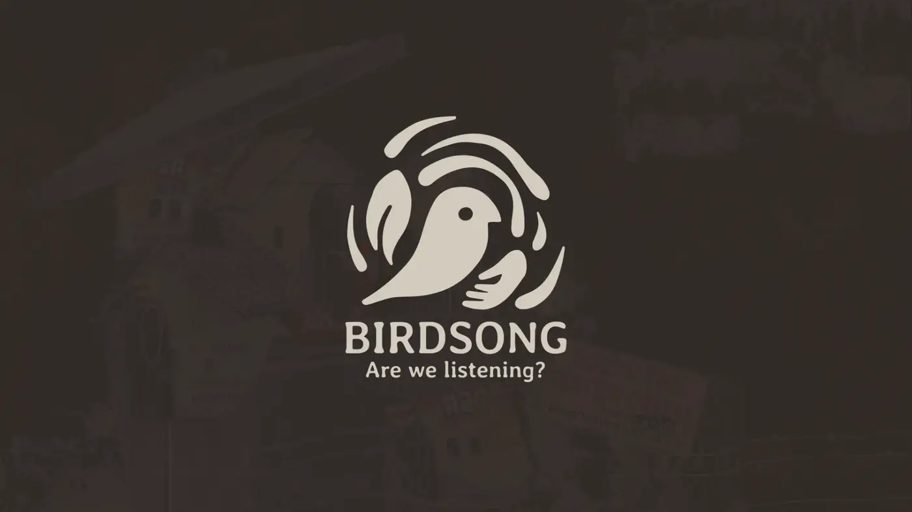
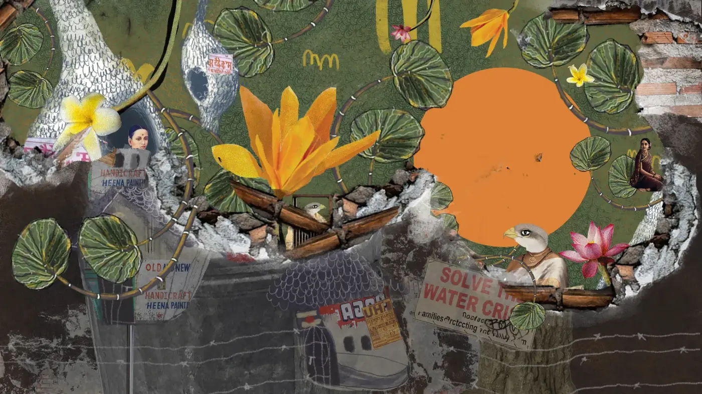
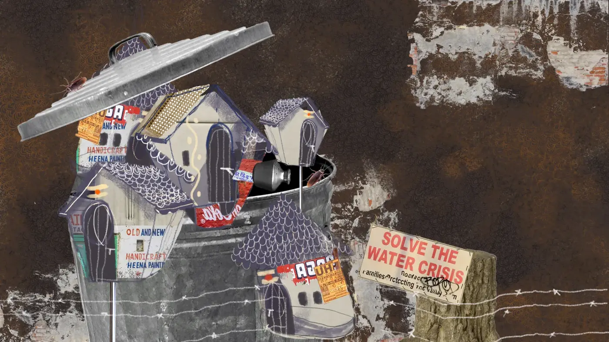
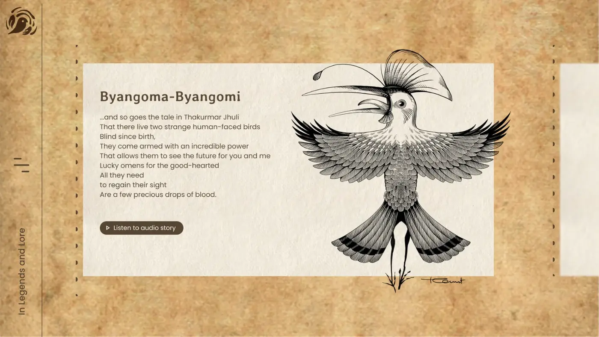
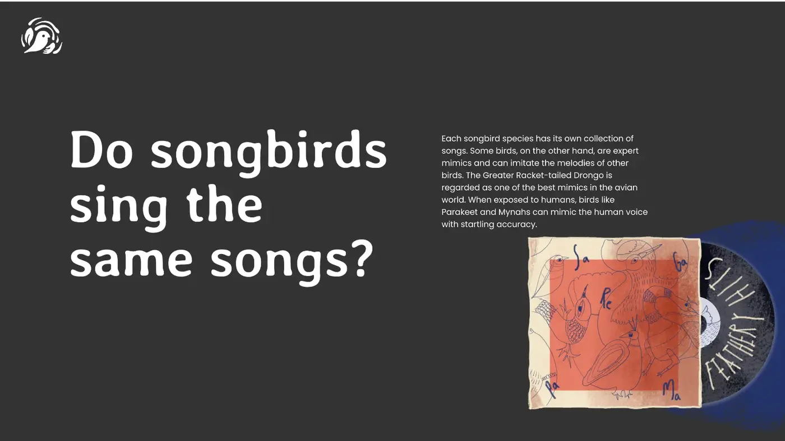
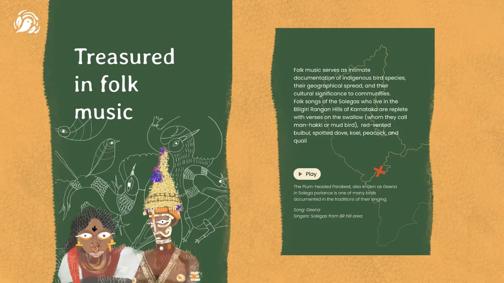

Case study 06 · Birdsong Indian Music Experience Museum · British Council · 2022
Taking a one-room exhibition online
Birdsong, an exhibition on Indian birds and music, lived in one room in Bengaluru. I helped design its virtual version so anyone, anywhere could visit.

Problem
Birdsong lived in one room in one city, so few people could see it, and younger visitors rarely came.
Insight
A gallery guides people with walls and light. A website has neither, so story, sequence and sound have to do that work.
Solution
A landing sequence that takes the birds away and gives them back, then four galleries visitors walk in their own order.
Result
A live virtual exhibition on the museum’s website, open to anyone, anywhere.
01 Context
A beautiful room, in one city
Birdsong ran as a physical exhibit at the Indian Music Experience Museum, Bengaluru, from April to August 2022. It held a whole musical world of birds, but younger visitors rarely came through the museum’s doors.
What I did
One of six interns, mentored for six months. I ran co-design sessions with visitors and designed interfaces for the physical and virtual exhibition, on web and mobile.
Who it was with
The Indian Music Experience Museum, with the British Council’s Our Shared Cultural Heritage programme.
02 Narrative
Start with silence
Online, there is no room to walk into. So the landing sequence does the work of the museum doors: it takes the birds away first, then gives them back. Drag to compare.


“Birds have inspired music, literature and even modern science.”
“Imagine a world without birds: empty skies, silent backyards, muted forests.”
03 Structure
Four galleries, one walk
The exhibit’s themes became four galleries. Each opens with one line on what’s inside, so visitors choose their own route. The intro is skippable, and every gallery returns to the menu.
- 01Nature’s SymphonySong, calls and physiology, plus a bird-house game
- 02Myths and LegendsBirds in Indian mythology and history
- 03Songs of NatureThe world of songbirds, and their tunes
- 04Birds in MusicHow birds inspired classical, folk and instrumental music
04 Design
Collage, texture and sound
Hand-cut collage, handmade-paper textures and an earthy palette carry the warmth of the gallery onto the screen. Songs, calls and recordings sit inside the pages, so visitors listen as they read.



05 Reflection
Translate the room, don’t copy it
A gallery guides people with walls and light. A website has neither, so the story, the sequence and the sound had to do that work instead.
Work with me
Hiring a product designer? Let’s talk.